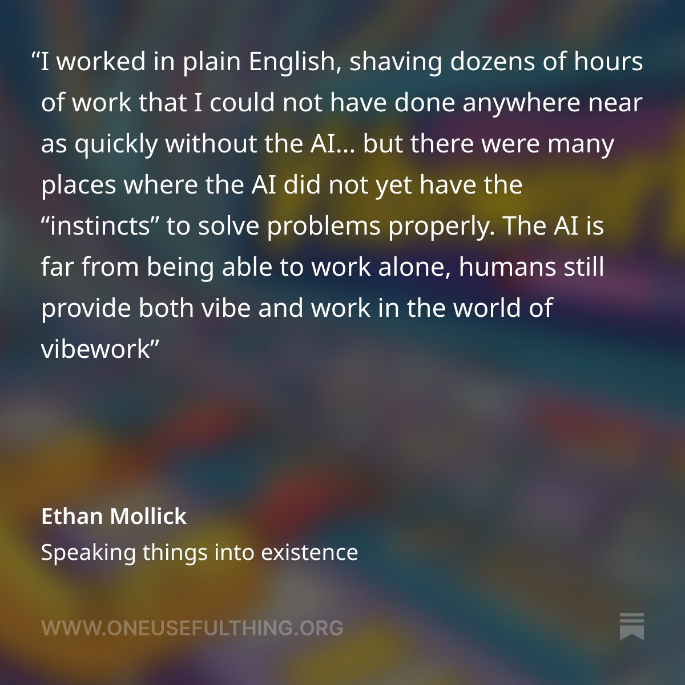

TESTSBDFJBSDF
Grundlagen & KI-gestützte Entwicklung mit "Vibe Coding"
Ein praxisorientierter Workshop für Forscher*innen ohne Web-Entwicklungserfahrung
Inhaltsverzeichnis
- Web-Vokabular
- Einfache Entwicklungswerkzeuge
- Markdown für akademische Dokumentation
- Effektives Vibe Coding mit KI
- Vom Code zur Website: Einfaches Deployment
- Praxis: Digitale Geisteswissenschaften
- Barrierefreiheit (a11y) Basics
- Vibe Working in der Forschung
- Praktische Tipps & Tricks
- Weiterführende Ressourcen
Das Web-Vokabular
Warum Vokabular für KI-gestützte Entwicklung entscheidend ist
- KI benötigt präzise Fachbegriffe um bessere Ergebnisse zu liefern
- Wir erinnern uns: Embeddings, Multidimensionales Universum
Die drei Grundpfeiler des Webs
- HTML – Struktur & Inhalt (Was wird angezeigt?)
- CSS – Gestaltung (Wie sieht es aus?)
- JavaScript – Interaktion (Was passiert bei Nutzer-Aktionen?)
Grundlagen HTML – Schlüsselbegriffe
-
HTML-Dokument (
<!DOCTYPE html>) -
Tags (z.B.
<h1>,<section>,<article>) -
Attribute (z.B.
class="timeline") -
Semantik (
<article>,<nav>,<figure>)
Beispiel: Grundaufbau für eine digitale Edition
<!DOCTYPE html>
<html lang="de">
<head>
<meta charset="utf-8" />
<meta name="viewport" content="width=device-width, initial-scale=1.0" />
<title>Digitale Edition: Briefe von Hannah Arendt</title>
<link rel="stylesheet" href="css/style.css" />
</head>
<body>
<header>
<h1>Briefe von Hannah Arendt (1933-1940)</h1>
<p class="institution">Universität Wien – Philosophisches Institut</p>
</header>
<main>
<section class="manuscript">
<h2>Brief vom 12. März 1935</h2>
<figure>
<img src="images/brief_1935.jpg" alt="Scan des handschriftlichen Briefes von 1935" />
<figcaption>Originalbrief an Karl Jaspers, 1935</figcaption>
</figure>
<article class="transcription">
<p>Sehr geehrter Herr Professor,</p>
<p>die Zeit in <span class="place" data-coordinates="48.2082,16.3738">Wien</span> ist...</p>
</article>
<aside class="annotations">
<h3>Anmerkungen</h3>
<ol>
<li id="note1">Die Erwähnung von Wien bezieht sich auf Arendts Aufenthalt im Winter 1935.</li>
</ol>
</aside>
</section>
</main>
<footer>
<p>© 2025 Digitale Editionen • <a href="methodik.html">Methodik</a></p>
</footer>
<script src="js/script.js"></script>
</body>
</html>Grundlagen CSS – Schlüsselbegriffe
- Selektor (selector), Eigenschaft (property), Wert (value)
- Responsive Design (für Mobilgeräte)
- Klassen vs. IDs
Beispiel: CSS für eine digitale Edition
/* Grundlayout */
body {
font-family: "Palatino", "Georgia", serif;
line-height: 1.6;
max-width: 800px;
margin: 0 auto;
padding: 1rem;
color: #333;
}
/* Spezifische Stile für Manuskripte */
.manuscript {
border: 1px solid #e0e0e0;
padding: 2rem;
margin-bottom: 2rem;
background-color: #f9f9f9;
}
.transcription {
font-family: "Courier New", monospace;
background-color: #fff;
padding: 1rem;
border-left: 3px solid #6b4c35;
}
/* Hervorhebungen für Orte, Personen etc. */
.place {
color: #2c5282;
font-style: italic;
cursor: help;
}
/* Responsives Design für mobile Geräte */
@media (max-width: 600px) {
.manuscript {
padding: 1rem;
}
figure img {
width: 100%;
height: auto;
}
}Grundlagen JavaScript
- Interaktivität hinzufügen (z.B. Zeitstrahl, Bildergalerie)
- Meist können Sie fertige Komponenten verwenden oder mit KI generieren
// Warten, bis das Dokument vollständig geladen ist
document.addEventListener("DOMContentLoaded", function () {
// Alle Elemente mit der Klasse 'place' auswählen
const placeElements = document.querySelectorAll(".place");
// Für jedes Element einen Event-Listener hinzufügen
placeElements.forEach(function (element) {
element.addEventListener("click", function () {
// Koordinaten aus dem data-Attribut lesen
const coordinates = this.dataset.coordinates;
// Einfache Infobox anzeigen
alert("Koordinaten: " + coordinates);
});
});
});Werkzeuge einrichten
Visual Studio Code (VS Code)
- Download: https://code.visualstudio.com/
-
Empfohlene Extensions
- Live Server (lokale Vorschau)
- Prettier (Code-Formatierung)
- Markdown All in One (Markdown ist wichtig!)
- Web Accessibility (a11y-Checker)
- HTML CSS Support
VSCode Extensions
Einfaches GitHub-Setup
- Erstellen Sie ein kostenloses Konto auf GitHub
- Installieren Sie GitHub Desktop für einfaches Veröffentlichen
- Veröffentichen Sie ihre Seite mit GitHub Pages

Browser DevTools – einfache Nutzung
- Inspektor: HTML & CSS anschauen
- Zugänglichkeitsprüfung: Kontrast, Screenreader-Kompatibilität
-
Hard Refresh:
Ctrl+F5(Windows) oderCmd+Shift+R(Mac)
Tipp: Öffnen mit
F12oder Rechtsklick → Untersuchen
Markdown für akademische Dokumentation
Was ist Markdown?
- Leichte Auszeichnungssprache
- Perfekt für README,Dokumentation und **unverzichtbar im Umgang mit LLMs **
- Direkt auf GitHub, GitLab, und vielen weiteren Plattformen gerendert
Grundlegende Syntax
Markdown-Code
# Hauptüberschrift
## Unterüberschrift
- Listenpunkt
- **Fett** und _Kursiv_
| Jahr | Ereignis | Quelle |
| ---- | ---------------- | ----------- |
| 1942 | Brief an Jaspers | Archiv Wien |Ergebnis
Hauptüberschrift
Unterüberschrift
- Listenpunkt
- Fett und Kursiv
| Jahr | Ereignis | Quelle |
|---|---|---|
| 1942 | Brief an Jaspers | Archiv Wien |
Erweiterte Markdown-Features
MathJax: $E = mc^2$ • Fußnoten:
[^1]
Zitationssysteme: [@Smith2022, p. 45]
Richtiges Kopieren und Einfügen
-
Einfaches Einfügen:
Ctrl+V(behält Formatierung) -
Einfügen ohne Formatierung:
Ctrl+Shift+V(nur Text) - Als Markdown kopieren: In Google Docs → Rechtsklick → "Als Markdown kopieren/einfügen"
- Formatierungsprobleme vermeiden: Texte immer zunächst in einem einfachen Texteditor (z.B. Notepad) zwischenspeichern
Wichtig: Word nicht benutzen!!
Vibe Coding mit KI
Was ist Vibe Coding?
"Vibe Coding (oder Vibecoding) ist eine Programmiertechnik, welche sich ganz auf Künstliche Intelligenz (KI) zum Generieren des Quellcodes verlässt und somit Programmierung auch für Unerfahrene zugänglich macht."
— Wikipedia
Der Begriff wurde von Andrej Karpathy (ehemaliger KI-Leiter bei Tesla und Gründer von OpenAI) im Februar 2025 geprägt und beschreibt einen Paradigmenwechsel in der Softwareentwicklung.
Charakteristiken des Vibe Codings
- Natürliche Sprache: Programmieren durch Beschreibung statt manuellem Coden
- Schnelle Iteration: Rasches Prototyping und Experimentieren
- Abstraktion: Fokus auf die Absicht statt auf technische Details
- Kollaboration mit KI: Mensch und Maschine als Team
Konzept
- Absicht beschreiben (Prompt) – kein manueller Code nötig
- KI liefert Vorschlag + Erklärung
- Testen und Anpassen in kleinen Schritten
Tipp: Beschreiben Sie Ihr Vorhaben in klaren Fachbegriffen (z.B. "digitale Edition", "annotierte Bibliographie").
Typischer Vibe Coding Workflow
- Konzeptualisierung: Beschreibung des Ziels in "natürlicher Sprache" → Promptotyping Markdown Documents!
- KI-Generierung: Erzeugung eines ersten Code-Entwurfs
- Iterative Verfeinerung: Feedback und Anpassungen
- Überprüfung und Finalisierung: Tests und Optimierungen
Beispiel: Promptotyping
Vom Code zur Website - Deployment
Frontend vs. Backend
- Frontend-Only: Statische Daten, einfache Präsentation - meist ideal
- Backend: Nur nötig für komplexe Datenbanken oder interaktive Nutzereingaben
GitHub Pages (kostenlos)
- Repo → Settings → Pages
- Branch
mainwählen + Save -
URL:
https://<user>.github.io/<repo>/
Alternative: Netlify (mit einfachem Drag-and-Drop Upload)
Beispielprojekte für Geisteswissenschaften
- Digitale Edition: Historische Texte mit Annotationen
- Interaktiver Zeitstrahl: Kulturelle oder historische Ereignisse
- Literarisches Netzwerk: Beziehungen zwischen Autoren visualisieren
- Digitale Ausstellung: Artefakte mit Kontext präsentieren
Typische Projektstruktur
digitale-edition/
├── index.html
├── css/
│ └── style.css
├── js/
│ └── script.js
├── images/
│ └── archiv-foto.jpg
└── README.mdBarrierefreiheit (a11y) Basics
- Warum? Inklusion, Forschungszugang für alle
-
Verwenden Sie semantische Tags (z.B.
<article>,<section>) -
Jedes Bild benötigt
alt-Text - Stellen Sie guten Kontrast sicher
- Machen Sie Navigation tastaturzugänglich
- Testen Sie hier: https://wave.webaim.org/
a11y = "accessibility" (11 Buchstaben zwischen a und y)
Vibe Working in der Forschung
https://blog.google/technology/ai/thomas-story-alexander-disease/
Von Vibe Coding zu Vibe Working
Während Vibe Coding sich auf Programmierung konzentriert, beschreibt "Vibe Working" einen breiteren Ansatz der KI-gestützten Ideenentwicklung und Kreativarbeit in der Forschung.
Kernaspekte des Vibe Working
- Ideenfindung: Umwandlung vager Gedanken in strukturierte Konzepte
- Kollaboration mit KI: KI als Forschungspartner, nicht nur als Werkzeug
- Iterativer Prozess: Kontinuierliche Verfeinerung durch Dialog
- Interdisziplinarität: Verbindung verschiedener Fachgebiete
Anwendungen in der Forschung
- Literaturrecherche: Zusammenfassung und Analyse von Papers → Deep Research
- Datenanalyse: Explorative Untersuchung und Visualisierung
- Hypothesenbildung: Generierung neuer Forschungsfragen
- Methodenentwicklung: Planung experimenteller Designs
Gefahren
Halluzinationen!
Ausblick
Google DeepMind released AlphaEvolve: Wild breakthrough on Math after 56 years...
Anthropic CEO Dario Amodei: "AI will write all of the Code within 12 months"

Praktische Tipps & Tricks
Browser-Tipps
-
Hard Refresh: Löscht den Cache für die aktuelle
Seite
-
Windows:
Ctrl+F5oderShift+F5 - Mac:
Cmd+Shift+R
-
Windows:
- Unverzichtbar bei Änderungen an CSS/JS, die nicht sofort sichtbar werden
Kopieren und Einfügen
- Probleme mit Code-Formaten: Achten Sie auf versteckte Formatierungen
-
Einfügen ohne Formatierung:
- Windows:
Ctrl+Shift+V - Mac:
Cmd+Shift+V
- Windows:
-
Als Markdown kopieren:
- In Google Docs: Rechtsklick → "Als Markdown kopieren"
- Verhindert Probleme mit inkonsistenter Formatierung
Dateiverwaltung
- Konsistente Dateinamen: Keine Umlaute oder Leerzeichen in Datei- und Ordnernamen
- Bilder optimieren: Große Bilder vor dem Upload komprimieren (z.B. mit TinyPNG) oder .webP nutzen
Weiterführende Ressourcen
- Programming Historian - Tutorials für digitale Geisteswissenschaften
- MDN Web Docs - Web-Dokumentation
- The A11y Project - Barrierefreiheit
- https://wave.webaim.org/ - Barrierefreiheit Test Tool
- Zotero Web Library API - Bibliographien einbinden
Browser-basierte Tools
- Bolt.new: https://bolt.new/
- Lovable: https://lovable.ai/
- Replit: https://replit.com/
- Tempo Labs: https://www.tempo.new/
- v0 by Vercel: https://v0.dev/
Desktop-Tools
- Cursor: https://www.cursor.com/
- Windsurf (Codeium): https://codeium.com/windsurf
- Devin AI: https://devin.ai/
Agentic Tools
- Claude Code (Anthropic): https://www.anthropic.com/claude-code
- Devin AI: https://devin.ai/
- Manus: https://manus.im/
- Cursor Composer: https://www.cursor.com/composer
Ressourcen zum Thema Vibe Coding
- Andrej Karpathy's Tweet zu Vibe Coding: https://x.com/karpathy/status/1886192184808149383
- Vibe Coding Tools Vergleichsseite: https://www.vibecodingtools.com/
Zusammenfassung
- Präzise Beschreibungen ("Vokabular lernen") führen zu besseren KI-Ergebnissen.
- Markdown ist unverzichtbar in der Arbeit mit LLMs.
- GitHub Pages bietet kostenloses Hosting für Forschungsergebnisse.
- Barrierefreiheit ist essenziell für inklusive Geisteswissenschaften.
- Vibe Coding und Vibe Working bieten neue Wege, mit KI zu kollaborieren.